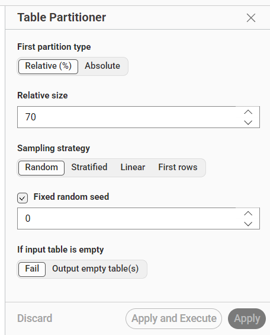
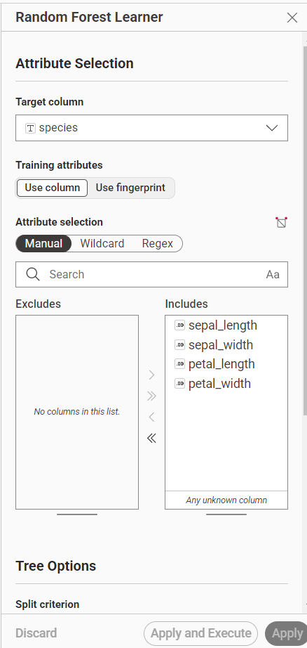
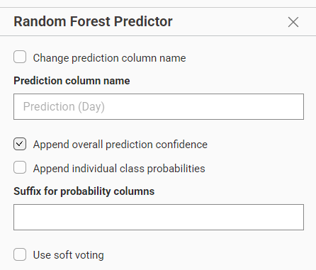
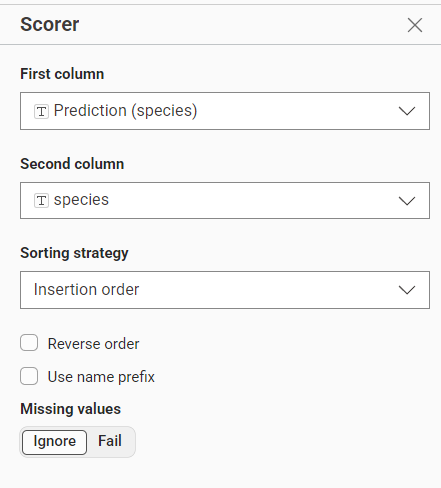
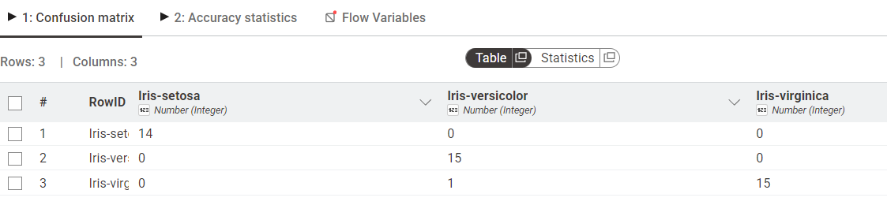

Decision Tree vs. Random Forest#
1. Pendahuluan#
Laporan ini menyajikan perbandingan mendalam antara konsep teoretis penentuan Root Node menggunakan metrik Gain Ratio (C4.5) dengan implementasi praktis model Random Forest pada platform KNIME. Analisis ini menggunakan dua pendekatan: perhitungan manual untuk pemahaman logika dan penggunaan ensemble learning untuk akurasi tinggi.
2. Landasan Teori: Algoritma C4.5#
Algoritma Decision Tree (C4.5) mengandalkan perhitungan statistik untuk membangun struktur pohon yang paling efisien.
A. Rumus Dasar#
Entropy(S): Mengukur ketidakpastian atau ketidakmurnian dalam dataset. \(Entropy(S) = \sum_{i=1}^{n} -p_i \log_2 (p_i)\)
Information Gain: Menghitung efektivitas suatu atribut dalam membagi data. \(Gain(S, A) = Entropy(S) - \sum_{v \in Values(A)} \frac{|S_v|}{|S|} \cdot Entropy(S_v)\)
Gain Ratio: Menormalisasi Gain dengan Split Information untuk menghindari bias pada atribut dengan banyak nilai unik. \(GainRatio(A) = \frac{Gain(A)}{SplitInfo(A)}\)
B. Demonstrasi Perhitungan (Dataset Play Tennis)#
Berdasarkan data histori 14 instans (9 Yes, 5 No):
Entropy Total: 0.940
Outlook Gain: 0.247
Outlook Split Info: 1.577
Outlook Gain Ratio: 0.156
Kesimpulan Teoretis: Atribut Outlook terpilih sebagai Root Node karena memiliki Gain Ratio tertinggi dibandingkan atribut lainnya (Temp, Humidity, Wind).
3. Implementasi KNIME: Random Forest#
Berdasarkan alur kerja di KNIME, berikut adalah detail konfigurasi sistem untuk klasifikasi dataset Iris. Dataset ini memiliki 4 atribut prediktor (sepal_length, sepal_width, petal_length, petal_width) dan 1 atribut target kategorikal (species) yang terdiri dari 3 kelas: Iris-setosa, Iris-versicolor, dan Iris-virginica.
A. Penyiapan Data (Table Partitioner)#

Langkah pertama adalah membagi dataset utuh menjadi data latih (training set) dan data uji (test set).
Metode: Relative (%)
Ukuran: 70% dialokasikan sebagai data latih untuk membangun model, dan sisa 30% sebagai data uji.
Sampling strategy: Menggunakan Random agar distribusi data teracak dengan baik.
Random Seed: 0 (Fixed). Penggunaan nilai yang tetap ini memastikan hasil eksperimen bersifat konsisten dan dapat direplikasi ulang.
B. Konfigurasi Model (Random Forest Learner)#

Data latih (70%) dihubungkan ke node Random Forest Learner untuk membangun “hutan keputusan” berdasarkan data historis.
Target Column:
species(kelas yang ingin diprediksi).Atribut Prediktor:
sepal_length,sepal_width,petal_length,petal_width.Metode: Model membangun sekumpulan pohon keputusan secara acak untuk mempelajari pola kombinasi ukuran kelopak dan mahkota bunga, sehingga meningkatkan stabilitas prediksi dibandingkan pohon keputusan tunggal.
C. Proses Prediksi (Random Forest Predictor)#

Setelah dilatih, model diteruskan ke node Random Forest Predictor untuk memproses data uji (30%) yang belum pernah dilihat sebelumnya.
Fitur Tambahan: Mengaktifkan Append overall prediction confidence. Ini memungkinkan output untuk tidak hanya menampilkan hasil klasifikasi (spesies), tetapi juga persentase tingkat keyakinan probabilitas model terhadap tebakan tersebut.
D. Konfigurasi Evaluasi (Scorer)#

Untuk mengukur performa prediksi, dipasang node Scorer sebagai penilai otomatis.
First column:
Prediction (species)sebagai hasil tebakan model.Second column:
speciessebagai kunci jawaban atau label asli dataset.
4. Analisis Performa (Confusion Matrix)#

Berdasarkan output evaluasi dari node Scorer, model menunjukkan performa yang sangat impresif, sebagaimana dirangkum dalam Matriks Kebingungan (Confusion Matrix) berikut:
Actual \ Predicted |
Iris-setosa |
Iris-versicolor |
Iris-virginica |
|---|---|---|---|
Iris-setosa |
14 |
0 |
0 |
Iris-versicolor |
0 |
15 |
0 |
Iris-virginica |
0 |
1 |
15 |
Statistik Kunci:#
Total Baris Diuji: 45 baris data uji.
Prediksi Benar: 44 baris diprediksi dengan tepat pada kelas aslinya.
Prediksi Salah: 1 baris (terdapat 1 data Iris-virginica yang keliru diprediksi sebagai Iris-versicolor).
Perhitungan Akurasi:#
Rumus akurasi didapatkan dari rasio tebakan benar terhadap total data uji.
Akurasi Akhir model mencapai 97.778%. Kesalahan tunggal ini dapat dimaklumi secara biologis, karena irisan ukuran kelopak antara virginica dan versicolor memang sangat mirip, menjadikannya area yang sulit dipisahkan sempurna oleh algoritma.
5. Kesimpulan dan Perbandingan#
Fitur |
Decision Tree (Tunggal) |
Random Forest |
|---|---|---|
Struktur |
Satu pohon keputusan. |
Gabungan banyak pohon (Ensemble). |
Interpretasi |
Sangat mudah dipahami (Visual Tree logis). |
Lebih sulit dipahami secara visual (Model Black-Box). |
Stabilitas |
Rentan (overfitting) terhadap perubahan kecil pada data. |
Sangat stabil dan akurasi secara umum jauh lebih tinggi. |
Kesimpulan Akhir: Implementasi Random Forest pada platform KNIME terbukti sangat efektif untuk menangani klasifikasi dataset Iris. Penggunaan mekanisme ensemble memberikan tingkat keandalan dan akurasi prediksi yang jauh lebih superior dibandingkan dengan mengandalkan satu pohon keputusan algoritma C4.5 secara konvensional.